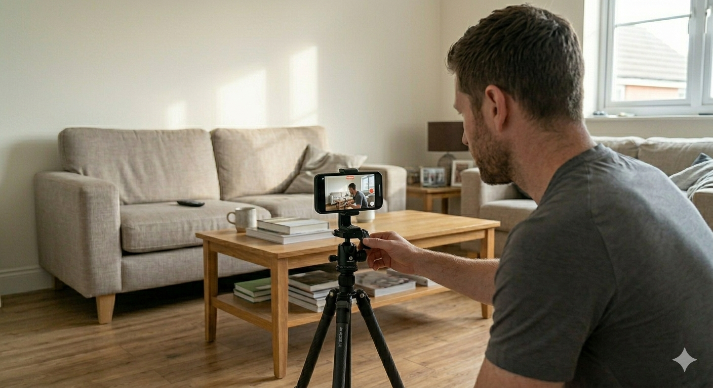

Galaxy AI ile Tanışın
Antrenmanda
Yeni Bir Dönem.
Cihazınızdaki yapay zeka ile her hareketinizi analiz edin. Güvenli, akıllı ve tamamen size özel bir deneyim.
Cihazınızdaki yapay zeka ile her hareketinizi analiz edin. Güvenli, akıllı ve tamamen size özel bir deneyim.

Vitis AI, sadece antrenman yaptırmaz; gelişmiş sensör entegrasyonları ve yapay zeka algoritmalarıyla sağlığınızı ve güvenliğinizi 7/24 korur.
Ekranınıza bakarak dengenizi bozmanıza gerek kalmaz. Gelişmiş kulaklık koçluğu, formunuz bozulduğu an sesli uyarılar ve düzeltici komutlar verir.
Akıllı saatiniz ile entegre çalışarak nabzınız tehlike eşiğini aştığında veya omurga açınız kritik seviyede bozulduğunda bileğinize güçlü titreşim uyarısı gönderir.
Olası bir düşme, ağırlık altında ezilme veya antrenmanda baygınlık durumunda sistem 5 saniye içinde sesli yanıt alamazsa 112 ve yakınlarınıza otomatik konum gönderir.
Hedeflerinize uygun profesyonel programlardan size en uygun olanı belirleyin.
Cihazınızı vücudunuzu tam görecek şekilde yerleştirin ve uygulamayı başlatın.
Sistem saniyeler içinde iskeletinizi çıkarır ve her ekleminizi takip etmeye başlar.
Formunuz bozulduğu an sesli komutlarla profesyonel bir antrenör gibi sizi uyarır.

Tarayıcı tabanlı kameranızı açarak yapay zekanın eklem açılarınızı nasıl analiz ettiğini canlı görün. Kameranız yoksa simülatörle test edin!
Vitis AI, geleneksel yöntemlerin kısıtlamalarını ve dijital çözümlerin yüzeyselliğini tek bir sistemde çözer.
Maliyet, erişilebilirlik ve teknik hassasiyet arasında kurduğumuz denge ile fitness dünyasında yeni bir standart belirliyoruz.
| Kriter | Vitis AI | Diğerleri |
|---|---|---|
| Gerçek Zamanlı Form Analizi | ||
| Biyomekanik Hassasiyet | ||
| 7/24 Erişilebilirlik | ||
| Düşük Maliyet | ||
| Sakatlık Önleme |